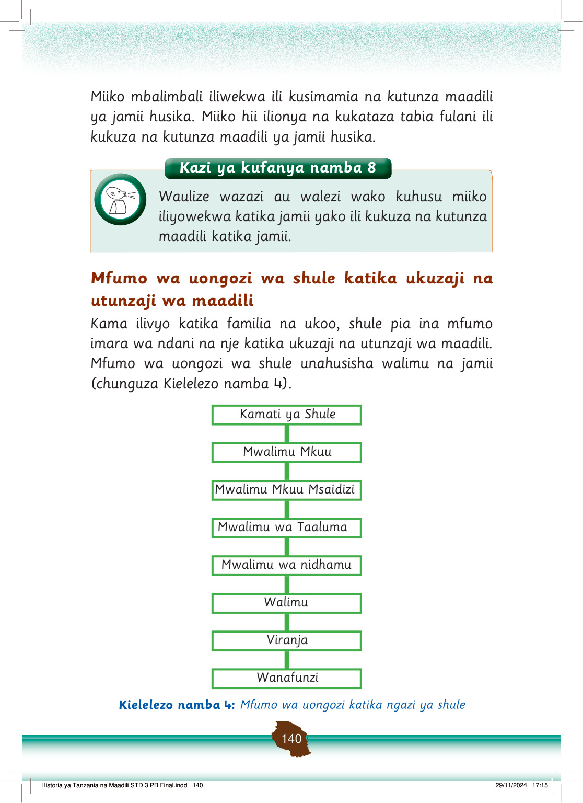

Kazi ya kufanya namba 9
Chunguza mfumo wa uongozi katika Kielelezo namba 4 na andika majukumu ya kila ngazi ya uongozi wa shule katika kukuza na kutunza maadili shuleni.
Viongozi wa shule husimamia maadili kwa kushirikiana na jamii, walimu na wanafunzi.
Zoezi la 3
1.
Eleza nani mwenye jukumu la kuchukua hatua za usimamizi wa maadili iwapo itatokea:
(i) Kuchelewa kufika shuleni [[blank:item-1]]
(ii) Kupiga kelele darasani [[blank:item-2]]
(iii) Kumtukana mwalimu [[blank:item-3]]
(iv) Kutokumaliza kazi za masomo darasani [[blank:item-4]]
(v) Kutokuvaa sare za shule [[blank:item-5]]
(vi) Kukosa vipindi darasani [[blank:item-6]]
(vii) Kupigana na mwalimu [[blank:item-7]]
(viii) Kupigana na mwenzako shuleni [[blank:item-8]]
(ix) Kuwatukana wengine [[blank:item-9]]
(x) Kuwasukuma au kufinya wengine [[blank:item-10]]
Kuna viongozi wanaosimamia ukuzaji na utunzaji wa maadili shuleni.
Mwalimu mkuu
Mwalimu mkuu ndiye kiongozi mkuu katika ngazi ya shule.
Mwalimu mkuu ana jukumu la kusimamia mambo ya taaluma na nidhamu za wanafunzi wote shuleni.
Pia, ana jukumu la kukuza maadili mema kwa wanafunzi.
Kwa mfano, kusimamia maendeleo ya taaluma, utii wa sheria na taratibu za shule pamoja na kutuza rasilimali za shule.
mwalimu wa darasa
mwalimu wa darasa
mwalimu mkuu
mwalimu wa darasa
mwalimu wa darasa
mwalimu wa darasa
mwalimu mkuu
mwalimu wa darasa
mwalimu wa darasa
mwalimu wa darasa